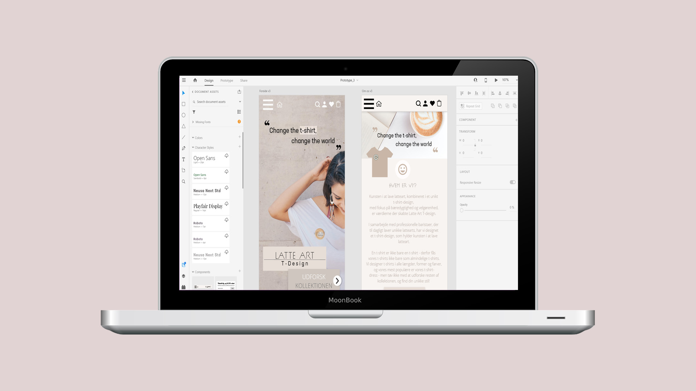

Tema 3
03.03.02 Endelig Prototype

Efter endt research og skitsering af prototypen (se forrige opgave), påbegyndte jeg at designe min prototype, som skulle ende ud i en fiktiv webshop, der solgte t-shirts.
I denne del af temaet, var der nu fokus på at skabe en Hifi-prototype med tilhørende indholdsproduktion. I den forbindelse blev vi præsenteret for følgende:
- Indholdstrategi
- Copywriting – copy og microcopying
- Heatmaps
- Tænke-højt-tests
Proces
Efter undersøgelserne af diverse UX-elementer, havde jeg fokus på at implementere mine erfarede indsigter fra de forrige undersøgelser. Jeg havde stor fokus på at skabe et overskueligt design, med lettilgængelige UI-elementer, herunder like-knapper, købs-knapper og fandt ud fra mine undersøgelser, ud af at elementer såsom, størrelsesguide, ønskeliste (like-liste) og en profilside (så forbrugeren via profilen kunne tracke sin ordrer), var vigtige elementer for den samlede UX. Således fik jeg efterfølgende bygget en Lofi-prototype op i XD (se bilag 2)
Inden jeg kunne implementere dette, lavede jeg et Moodboard og Styletile (se bilag 1), for at visualisere farver, fonte, UI-elementer og motiver. Jeg brugte bløde pastelfarver, med fokus på en fin nuance af brun, og bomuldsfarve, for at visualisere kaffe-printet, som var webshoppens USP, samt virksomhedens øvrige værdier, herunder bæredygtighed.
Da jeg havde fastlagt mit Moodboard og Styletile, fastlagde jeg min indholdsstrategi. Jeg fandt rettighedsfrie stockphotos, og redigerede disse via Photoshop, så webshoppens logo, kunne printets på modellernes tøj, som jeg fandt billeder af. Herefter begyndte jeg at forfatte copy og microcopy.
Eksempler på copy og microcopy:
Allerede færdig med at shoppe? Shop for xx DKK, og opnå fri fragt! Shop videre │ Køb nu
I tvivl om størrelse? Indtast dine mål her
”Change the t-shirt, change the world” Køb en t-shirt, og støt et godt formål
På dette tema, var vi endnu ikke introduceret for sitemaps og flowcharts – det blev i dog på tema 4 – men til en anden gang, ville jeg dog have benyttet mig af disse, for at få et bedre overblik over hvordan sitets skulle struktureres. Dette ville have gjort det nemme at tilpasse den globale navigation, herunder burgermenu, indkøbskurv og søgeside, så det var nemmere at vide hvor disse skulle placeres og føres videre fra.
Jeg forfattede også en tagline; ”Change the t-shirt, change the world”, som skulle tiltrække forbrugerens opmærksomhed, og henlede den gode samvittighed på, at hvis man køber en t-shirt fra denne webshop, er man med til at støtte et godt formål.
Til slut, lavede jeg en tænke-højt-test på mine endelige prototype, for at afdække hvilke mangler der var eller hvilke aspekter, som brugeren kunne lide. Jeg introducerede brugeren for testen, stillede nogle få spørgsmål (såsom, hvad der kunne gøres anderledes, om sitet er bedre eller dårligere end andre sites, hvad førstehåndsindtrykket var) inden testen begyndte, og lod ellers brugerens tænke og navigere rundt på sitet, som skulle ende ud i et fiktivt køb, fra testpersonen af (se bilag 3, for at se prototypen, inden ændringer fra test).
Ud fra testen, fandt jeg frem til følgende (se bilag 4, for testresultater):
- Forsiden skulle gøre det tydeligere, hvad shoppen hed
- Lave flere call to action-knapper
- Skabe overskuelig kategori
- Formindske knapper, og skabe mere white space
Jeg ændrede disse ovenstående ting, og endte med at skabe min færdige Hifi-prototype (se bilag 5).